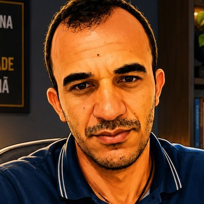

Nenhuma atividade encontrada.

"Chega mais perto e contempla as palavras. Cada uma tem mil faces secretas sob a face neutra e te pergunta, sem interesse pela resposta, pobre ou terrível que lhe deres: Trouxeste a chave?"
— Carlos Drummond de Andrade, Procura da Poesia
Nenhuma atividade encontrada.